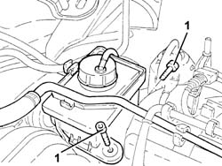
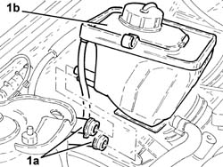
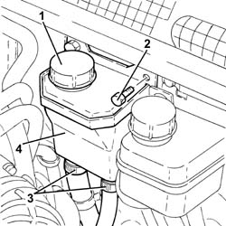
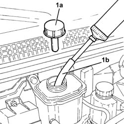
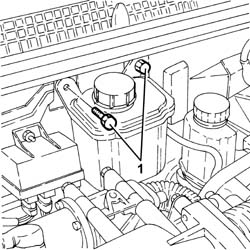
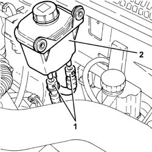

4130B10 power steering fluid resevoir r r
- Path
- Procedures > 41 STEERING > 4130 POWER ASSISTED STEERING > 4130B power steering hydraulic sytem > 4130B10 power steering fluid resevoir r r
- Kind
- repair procedure (removal / refitting; the operation number is the code)
- Applies to
- all engines; all production periods
- Interactive page
- https://sloeber94.github.io/elrnDB-a147/en/#/3025293
Applies to: engines: 1.6 TS, 2.0 TS; all production periods
 Removing
Removing
 Refitting
RefittingProceed with removal 1016A40 ignition coil cover on cylinder head- r+r .
Proceed with removal 1008C10 power unit upper reaction link r r .
Remove the power steering fluid reservoir and drain the fluid using a suitable syringe.
1. Undo the bolts securing the power steering fluid reservoir.

Applies to: engines: 1.6 TS, 2.0 TS; all production periods
1. Disconnect the inlet and outlet hoses (1a), then remove the power steering fluid reservoir (1b).

Applies to: engines: 1.6 TS, 2.0 TS; all production periods
Refitting
RemovingReift the power steering fluid reservoir and connect the fluid inlet and outlet pipes.
Tighten the power steering fluid reservoir bolts.
Proceed with refitting 1008C10 power unit upper reaction link r r .
Proceed with refitting 1016A40 ignition coil cover on cylinder head- r+r .
Fill the power steering circuit with the recommended fluid.
 | Type | Component | Name | Qty. |
|---|---|---|---|---|
- | Oli [l] | POWER ASSISTED STEERING CIRCUIT | TUTELA GI/A | 1.2 |
Bleed the power steering system as described below
With the front wheels raised off the ground, with the engine switched off turn the steering wheel to full lock, left and right, 4-5 times.
Check and, if necessary, top up the fluid level in the reservoir.
Position the vehicle on the ground and start up the engine.
Carry out 4 - 5 complete steering wheel rotation cycles (right and left).
Top up the fluid level in the reservoir.
Applies to: engines: 3.2 V6; all production periods
Removing
Refitting1. Remove the power steering fluid reservoir and drain the fluid using a suitable syringe.
Refit the brake fluid reservoir cap.
2. Undo the bolts securing the power steering fluid reservoir.
3. Raise the power assisted steering fluid reservoir as necessary, loosen the band and disconnect the coolant outlet and inlet pipes from the reservoir.
4. Remove the power steering fluid reservoir.

Applies to: engines: 3.2 V6; all production periods
Refitting
RemovingConnect the coolant inlet and outlet pipes to the reservoir and tighten the bands.
Refit in its seating the power steering fluid reservoir and secure it with its bolts.
Refill the power assisted steering circuit using the recommended fluid.
| Type | Component | Name | Qty. |
|---|---|---|---|---|
- | Fluid [l] | HYDRAULIC POWER ASSISTED STEERING SYSTEM | TUTELA GI/A | 1.2 |
Bleed the power steering system as described below
With the front wheels raised off the ground, with the engine switched off turn the steering wheel to full lock, left and right, 4-5 times.
Check and, if necessary, top up the fluid level in the reservoir.
Position the vehicle on the ground and start up the engine.
Carry out 4 - 5 complete steering wheel rotation cycles (right and left).
Top up the fluid level in the reservoir.
Applies to: engines: 1.9 JTD 8V, 1.9 JTD 16V; all production periods
Removing
RefittingProceed with removal 1016A10 sound-proofing cover - r + r .
1. Remove the power steering fluid reservoir cap (1a) and drain the fluid using a suitable syringe (1b).
Refit the brake fluid reservoir cap.

Applies to: engines: 1.9 JTD 8V, 1.9 JTD 16V; all production periods
1. Undo the bolts securing the power steering fluid reservoir.

Applies to: engines: 1.9 JTD 8V, 1.9 JTD 16V; all production periods
1. Move the power assisted steering fluid reservoir away, placing it as illustrated in the diagram, then disconnect the rapid connectors for the power assisted steering fluid inlet and outlet pipes from the reservoir.
2. Remove the power steering fluid reservoir.

Applies to: engines: 1.9 JTD 8V, 1.9 JTD 16V; all production periods
Refitting
RemovingConnect the rapid connectors for the power assisted steering fluid inlet and outlet pipes to the reservoir.
Refit in its seating the power steering fluid reservoir and secure it with its bolts.
Refill the power assisted steering circuit using the recommended fluid.
| Type | Component | Name | Qty. |
|---|---|---|---|---|
- | Oli [l] | POWER ASSISTED STEERING CIRCUIT | TUTELA GI/A | 1.2 |
Bleed the power steering system as described below
With the front wheels raised off the ground, with the engine switched off turn the steering wheel to full lock, left and right, 4-5 times.
Check and, if necessary, top up the fluid level in the reservoir.
Position the vehicle on the ground and start up the engine.
Carry out 4 - 5 complete steering wheel rotation cycles (right and left).
Top up the fluid level in the reservoir.
Proceed with refitting 1016A10 sound-proofing cover - r + r .
Topics linked from this page (3)
- 1008C10 power unit upper reaction link r r
- 1016A10 sound-proofing cover - r + r
- 1016A40 ignition coil cover on cylinder head- r+r
Topics that link to this page (9)
- H10 STEERING HARD / (STEERING IN BOTH DIRECTIONS)
- X30 POWER ASSISTED STEERING SYSTEM FLUID LEAKS
- 1072D22 Air flow switching device control ACTUATOR - R.R.
- 3330C10 (PUMP) - MASTER CYLINDER R.R.
- 3330C37 pipe from brake fluid reservoir to master cylinder (pump) - r r for rhd versions
- 3330D11 brake servo - r r including seperation from master cylinder - facia lining removed for rhd version
- 4130B20 power steering pump r r
- 4130B34 supply pipe from fluid resevior to power steering pump r r
- 4130B40 outlet pipe from pump to power steering case r r